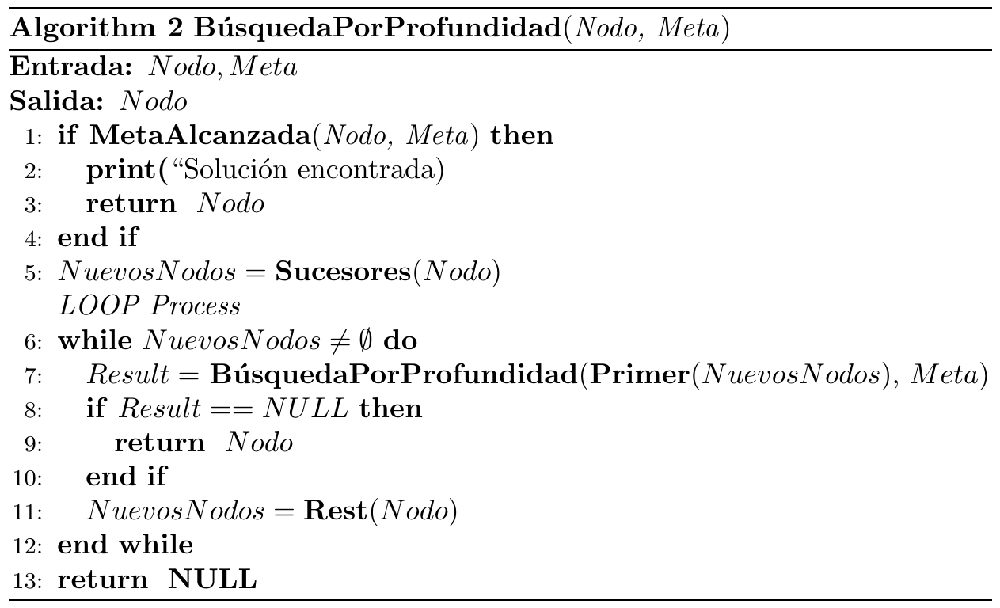
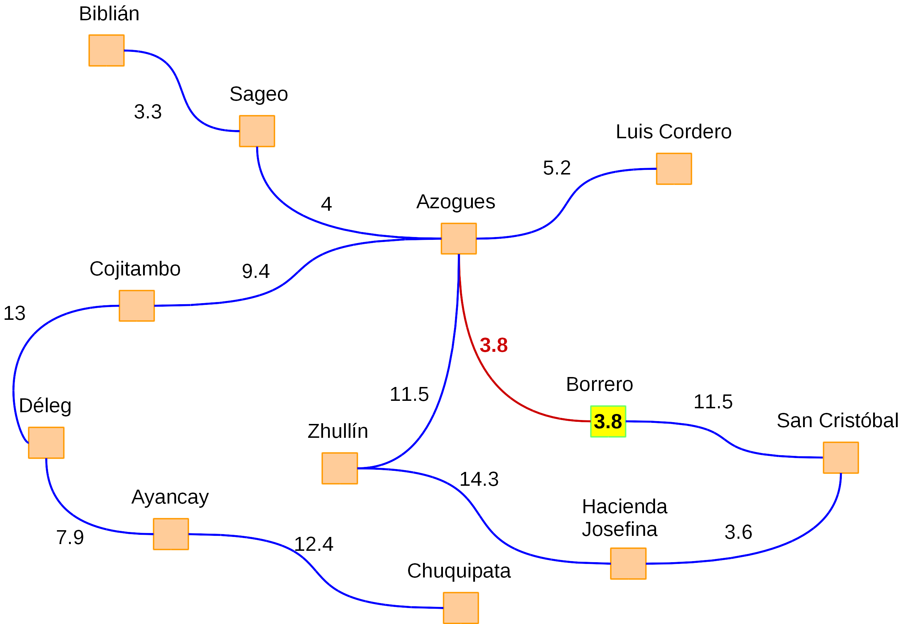
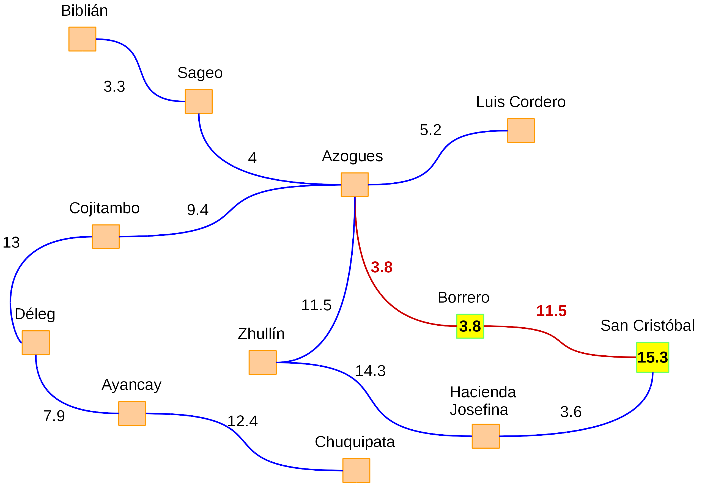
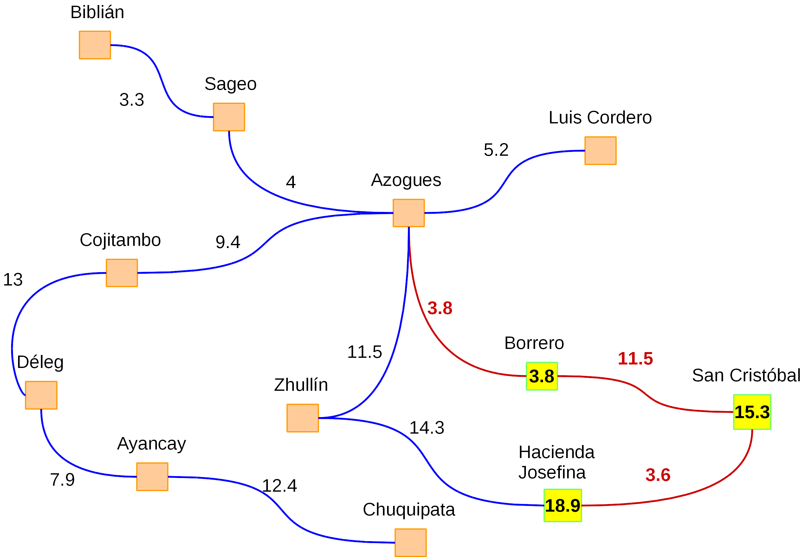
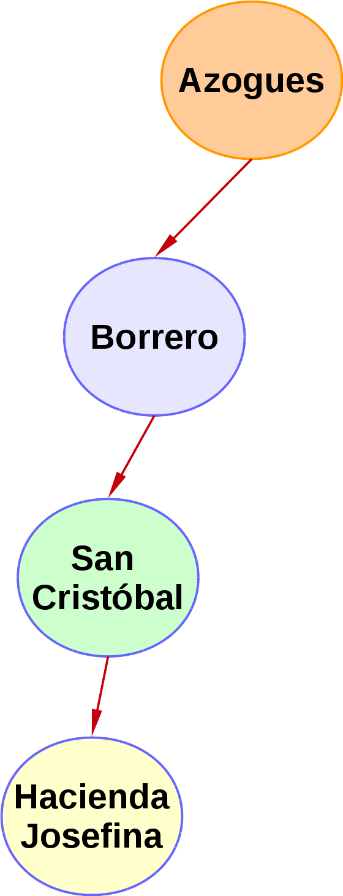

En la búsqueda por profundidad (Depth-First Search) también el árbol de búsqueda es explorado desde la parte superior a la inferior. En este método es importante notar que la búsqueda se escoge un nodo y expande solo uno de sus hijos, y así se realiza sucesivamente. Este proceso se seguirá repitiendo hasta que el nodo no tenga más sucesores. Si ocurre esto, se retrocede un nivel y se selecciona alguno de los otros nodos abiertos en el nivel. Si no existen nodos que explorar, se retrocede un nivel más (De la Fuente López, 2010).
En vista de lo anterior, se puede decir que este tipo de búsqueda se torna muy profunda, ya que solo cuando un nodo no tiene sucesores y no se encuentra el nodo meta, el siguiente nodo se expandirá haciendo backtracking o retroceso (al último nodo abierto anteriormente) (Ertel, 2017).
El proceso que realiza este método se lleva a cabo de acuerdo al algoritmo que se describe seguidamente (Ertel, 2017):

Es importante observar que se incorporan 3 funciones (Ertel, 2017):
- MetaAlcanzada(): esta función verifica si un nodo dado es una meta.
- Primer(): esta función devuelve el primer elemento de una lista dada.
- Rest(): esta función devuelve el resto de elementos de una lista dada.
A fin de ilustrar de una manera sencilla cómo funciona este método, vamos a retomar el ejemplo del problema del "viajero", donde dado el siguiente grafo, debemos ir del nodo "Azogues" al nodo "Hacienda Josefina". A continuación se irá explicando paso a paso cómo se lleva a cabo el proceso de búsqueda:

Para resolver el problema, necesitamos saber qué nodos se han visitado a fin de no quedar en un bucle infinito. De forma similar a lo realizado en la búsqueda por amplitud, emplearemos una pila para colocar los nodos visitados y una lista de salida. Es importante recordar que una pila maneja la lógica LIFO (Last-In First-Out, Último en Entrar, Primero en Salir).
- Como primer paso agregamos el nodo de partida a la pila. Con lo que nuestra pila quedaría definida de la siguiente forma: Pila = {Azogues}.
- A continuación analizamos cuáles son las posibles acciones para el nodo "Azogues". Si partimos de este nodo, el camino actual a los puntos adyacentes (Sageo, Cojitambo, Luis Cordero, Zhullín y Borrero) tienen diferentes costes. Por ejemplo, pasar de "Azogues" a "Sageo" tiene un coste de 4, de "Azogues" a "Zhullín" 11.5, etc. Como podemos ver, la mejor opción es ir a "Borrero" ya que tiene un coste de 3.8. Con ello, agregamos "Borrero" a la pila y a la lista de salida:
- Coste del camino = 3.8
- Pila = {Borrero, Azogues} (note que en la pila los elementos que se van agregando se colocan al inicio, por el modelo LIFO que se maneja).
- Visitados = {Azogues, Borrero}
- 
- A continuación analizamos cuáles son las posibles acciones para el nodo "Azogues". Si partimos de este nodo, el camino actual a los puntos adyacentes (Sageo, Cojitambo, Luis Cordero, Zhullín y Borrero) tienen diferentes costes. Por ejemplo, pasar de "Azogues" a "Sageo" tiene un coste de 4, de "Azogues" a "Zhullín" 11.5, etc. Como podemos ver, la mejor opción es ir a "Borrero" ya que tiene un coste de 3.8. Con ello, agregamos "Borrero" a la pila y a la lista de salida:
- A continuación validamos si "Borrero" es un nodo meta, como no lo es, continuamos. Ahora analizamos las posibles acciones para el estado "Borrero". Dado que sólo existe 1 camino para los nodos sucesores, tomamos el camino a "San Cristóbal" que tiene un coste de 11.5. Agregamos al nodo "San Cristóbal" a la pila y a la lista de nodos visitados, con lo que obtenemos los siguientes resultados:
- Coste del camino = 3.8 + 11.5 = 15.3
- Pila = {San Cristóbal, Borrero, Azogues}
- Visitados = {Azogues, Borrero, San Cristóbal}
- 
- A continuación verificamos si "San Cristobal" es un nodo meta, dado que no lo es, continuamos con el proceso de búsqueda. Ahora analizamos las posibles acciones para el nodo "San Cristobal", al igual que en el caso anterior, solo existe un camino posible hacia "Hacienda Josefina". Colocamos este nodo en la pila y en la lista de visitados y calculamos el coste actual del camino, con esto, obtenemos los siguientes resultados:
- Coste del camino = 3.8 + 11.5 + 3.6 = 18.9
- Pila = {San Cristóbal, Borrero, Azogues}
- Visitados = {Azogues, Borrero, San Cristóbal}
- 
- En este paso constatamos si el nodo "Hacienda Josefina" es un nodo meta y como sí es así, finaliza la búsqueda.
En la siguiente ilustración se puede apreciar cómo se realiza la búsqueda con este algoritmo. Como se observa, cada ramal del árbol se explora hasta llegar a los nodos hojas, y una vez que se llega a un nodo hoja, se hace retroceso (backtracking) y se busca expandir los otros nodos sucesores del nodo padre:

Propiedades de la búsqueda por profundidad
A continuación detallamos algunas de las propiedades más importantes de este tipo de búsqueda (Oliehoek, 2018):
- La búsqueda por profundidad siempre encontrará una solución (si existe al menos 1) a pesar de que existan caminos infinitos.
- No se garantiza que la solución encontrada sea la óptima.
- La cantidad de tiempo y memoria que requiere este algoritmo es mucho menor que el empleado en la búsqueda por amplitud.
- Para un factor de ramificación b y una máxima profundidad n del árbol de búsqueda, la búsqueda por profundidad requiere almacenar b*n nodos.
Análisis del algoritmo
Seguidamente se describen los principales aspectos relacionados con el análisis del algoritmo en términos de completitud, optimalidad, complejidad temporal y complejidad espacial (De la Fuente López, 2010):
- Completo: el algoritmo no es completo ya que no encontrará una solución que esté a un nivel de profundidad mayor al que se realice la búsqueda. De igual forma, no es completo, ya que se puede entrar a buscar en una rama del árbol que no contenga nodos meta.
- Óptimo: no es óptimo ya que devuelve la primera solución que encuentre y dicha solución puede no ser la que tenga el camino con menor coste. Asimismo, esta solución puede estar en un nivel mucho más profundo que otras soluciones.
- Complejidad temporal: el peor de los casos se dará cuando encuentre el estado meta en el último nivel de la profundidad de la última rama del árbol. De darse esta situación, el algoritmo termina expandiendo todas las ramas y estados, dando como resultado un valor O(b^n).
- Complejidad espacial: el peor de los casos se dará cuando se expanda estados sin eliminar sus hijos o sucesores. Para un factor de ramificación b se almacenarán m estados con profundidad n, por lo que tendremos O(nb) estados.